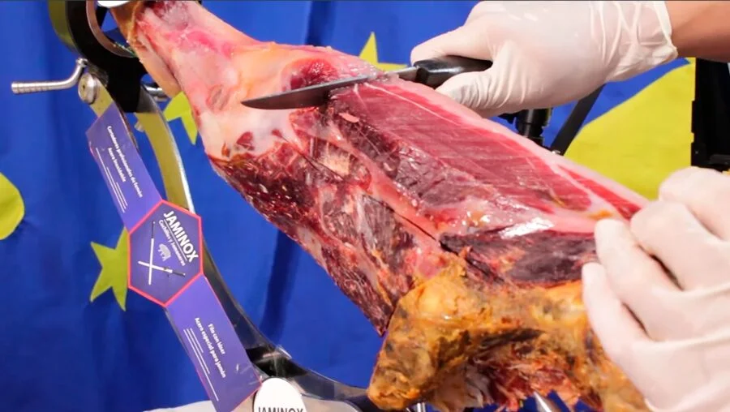
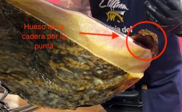
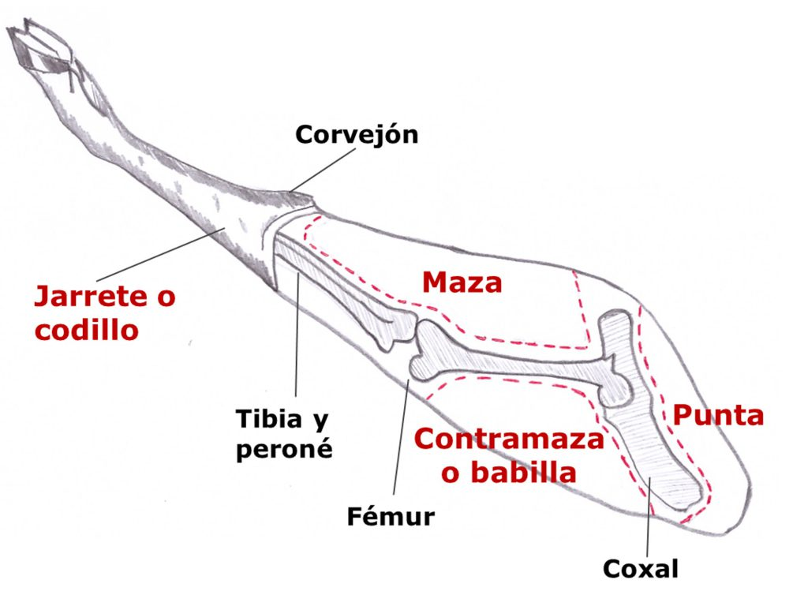

Corte de la babilla
Comenzamos limpiando la cara de la babilla de grasa externa. Hay que evitar dejar partes amarillentas que nos darán amargor a la loncha de jamón. Comenzaremos buscando el hueso de la rótuna y lo marcaremos, para iniciar el loncheado desde ahí hacia el final.

Tendremos que marcar igualmente el hueso de la cadera.

Buscaremos hacer el loncheado en la parte más cercana a la rótula en dirección a la misma. El resto se harán en dirección a la punta del jamón. Tendremos que ir descubriendo y marcando el hueso de la cadera según descendamos hasta encontrar de nuevo el hueso del fémur.
